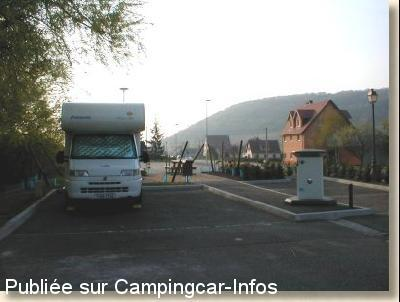

ASN = Aire de services avec stationnement nuit possible de :
WESTHALTEN
(N° 373)
Accès/adresse :
Rue Saint Blaise
68250 WESTHALTEN
68250 WESTHALTEN
Latitude : (Nord) 47.95637° Décimaux ou 47° 57′ 22′′
Longitude : (Est) 7.25095° Décimaux ou 7° 15′ 3′′
Tarif : 2010
Stationnement gratuit
Services : 2 € (100 L d'eau ou 1 heure d'électricité)
Type de borne : EURO-RELAIS
Services :


Tous commerces
Autres informations :
Aire ouverte de Mars à Novembre, gérée par la communauté des communes de la Vallée Verte
Tel Mairie : +33 (0) 389 470 001

Le 14/03/2003 par aamiah
de
sakai
le 10/04/2010 :
Aire en bord de route, très petite avec 2 emplacements mais propre. Nous avons fait 300 m et plus loin, à droite, en compagnie de 2 autres CC se trouve un grand parking quasi vide où nous avons passé une nuit calme.
Resto à 500 m : très bon accueil et nourriture sympa avec prix démocratiques.
Aire en bord de route, très petite avec 2 emplacements mais propre. Nous avons fait 300 m et plus loin, à droite, en compagnie de 2 autres CC se trouve un grand parking quasi vide où nous avons passé une nuit calme.
Resto à 500 m : très bon accueil et nourriture sympa avec prix démocratiques.
de
K. H. Huber
le 27/02/2009 :
Dieser Platz ist nur zur Entsorgung geeignet, da er direkt neben der Durchgangsstraße zum Ort liegt.
Dieser Platz ist nur zur Entsorgung geeignet, da er direkt neben der Durchgangsstraße zum Ort liegt.